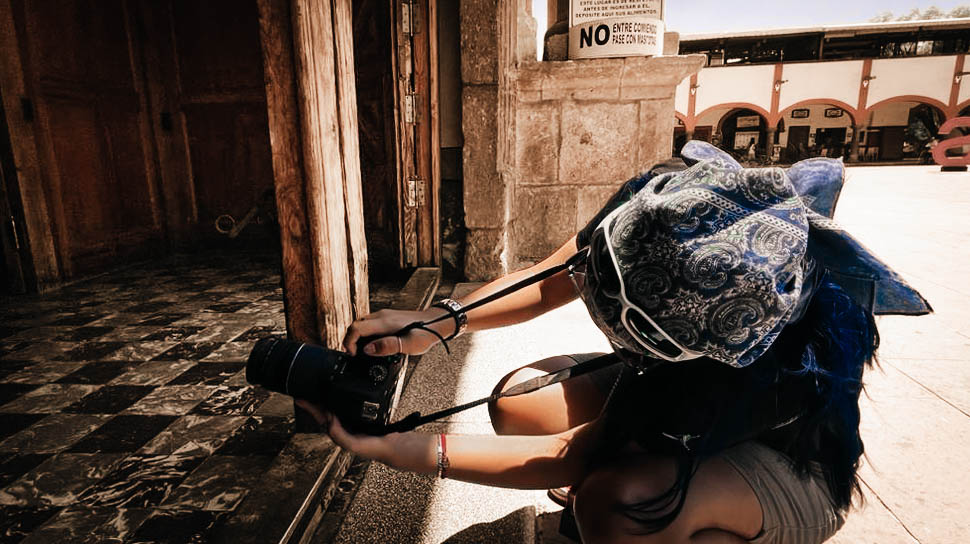
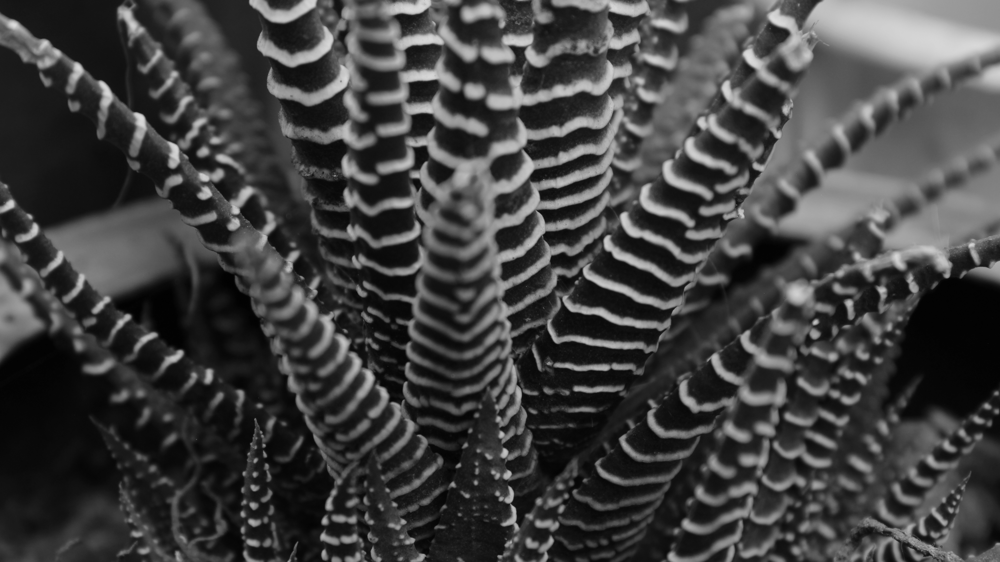

Nancy Ortiz
Estudiante de
Diseño de la Comunicación Gráfica
Hola, me presento contigo, soy Nancy. Tengo 22 años y actualmente curso la carrera de Diseño de la comunicación gráfica en la UAM Azcapotzalco, entre a esta carrera principalmente por la fotografía. Sin embargo, he podido encontrar otras cosas que llaman mi atención.
A través del objetivo. Desde siempre me ha gustado la fotografía y la edición, aunque no siempre estudie y me dedique tanto como ahora a esto, siempre ha sido parte de mi vida, cuando hago fotos me siento en mi lugar ideal, sin importar realmente donde me encuentre. Cada fotografía es una ventana a mi mundo interior, es una forma de poder compartir mi visión única del mundo con aquellos que me rodean.
C ontamos historias que trasciende las palabras. Capturo instantes fugaces.

De igual manera me interesa la música, la danza y el arte en general.
La música va más allá de ser solo una melodía, para mi es un refugio, una fuente de inspiración y una forma de expresión que trasciende las barreras del lenguaje.

De igual manera, cuando la música llena el aire y el ritmo comienza a palpitar dentro de mí, encuentro libertad y movimiento. El baile es mi lenguaje secreto, una forma de comunicarme sin palabras y de conectar conmigo de manera más profunda. En cada paso y cada giro encuentro renovación, sanación y vitalidad, con alegría puedo pasar por encima de cualquier preocupación.
Algo que me ha llamado mucho la atención son los medios audiovisuales, les dejo un pequeño corto que hice para una clase, fue mi primer acercamiento con este medio y quedé muy satisfecha con todo lo que aprendí y experimente durante el curso, creo que es un área en la que me ha gustado profundizar más.